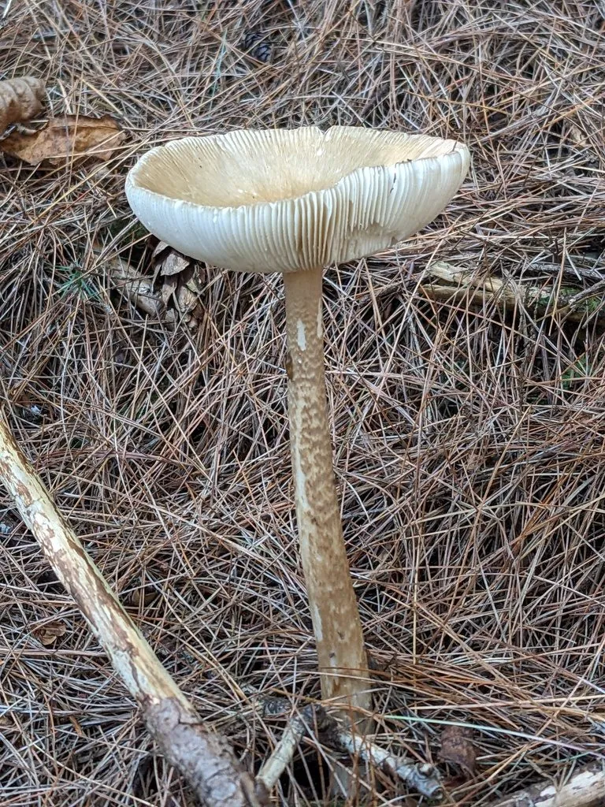

真菌 · 真菌界
灰鹅膏 Amanita vaginata

菌盖灰褐色、菌柄基部有灰白色菌托的鹅膏，一般认为可食但必须熟食，与剧毒鹅膏极易混淆，建议不采食。
- 分类
- 门担子菌门纲伞菌纲目伞菌目科鹅膏科属鹅膏属
- 栖息环境
- 针叶林和阔叶林的地面，与松树、栎树形成外生菌根
- 地理分布
- 欧洲、北美和东亚广泛分布，中国南北林区均有记录
- 保护级别
- 暂无评估（IUCN 未评估，食用需专业鉴定）
物种志
灰鹅膏是担子菌门伞菌目的真菌，子实体单生或群生。菌盖呈钟形至平展，直径 4–10 cm，表面灰褐色至灰白色，边缘有明显条纹；菌褶白色，离生；菌柄细长，灰白色，基部有灰白色袋状菌托，但通常没有菌环；孢子印白色。
灰鹅膏与松树、栎树等树木形成外生菌根，多生于针叶林和阔叶林的地面，夏秋季出菇，在欧洲、北美和东亚广泛分布。它通常被认为可以食用，但必须充分加热，且味道一般。由于鹅膏属中有白毒伞、毒鹅膏等剧毒种类，灰鹅膏与它们同属、外形相似，非专业人员极易混淆，因此不建议采食。野生菌中毒没有特效解毒药，预防的关键是不采、不买、不吃不认识的菌。
形态与习性
- 菌盖直径 4–10 cm，灰褐色至灰白色，边缘有条纹
- 菌褶白色，离生
- 菌柄细长灰白色，基部有袋状菌托，通常无菌环
- 孢子印白色
- 食用性一般认为可食，但必须充分加热，风险较高
- 辨识与剧毒鹅膏相似，建议不采食
趣味知识
- 灰鹅膏的菌柄基部有灰白色袋状菌托，这是鹅膏属的典型特征。
- 它通常被认为可食，但与剧毒鹅膏同属且外形相似，容易被混淆。
- 非专业人员不要采食鹅膏属野生菌，中毒后没有特效解毒药。